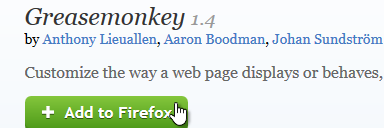
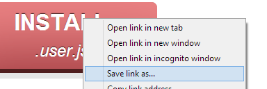
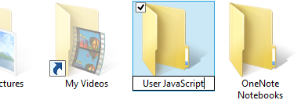
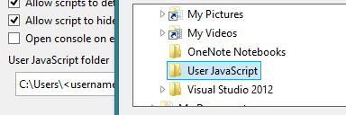
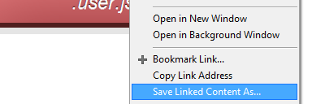
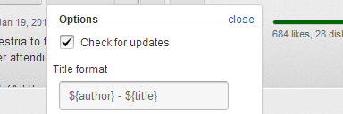

YouTube Video Download is a userscript for YouTube that allows you to download videos to your computer.
It's lightweight, easy to use and supports all video formats found on the page.
INSTALL.user.js
If you're familiar with userscripts, click the red button and enjoy, otherwise please read the instructions for your web browser below.
How to install in Mozilla Firefox
- Install Greasemonkey or Scriptish.
- Restart Firefox.
- Click the install link above.

How to install in Google Chrome
- Save the install link above. Make sure the file name ends in .user or .user.js.
- Open the Extensions page (Tools ⇒ Extensions) and drag the file on to it.

How to install in Opera
- Create a folder somewhere on your computer to store userscripts.
- Go to your JavaScript options (Opera ⇒ Settings ⇒ Preferences... ⇒ Advanced ⇒ Content ⇒ JavaScript Options...) and set your User JavaScript folder to the one you made.
- Save the install link above to your userscripts folder. Make sure the file name ends in .user or .user.js.



How to use
Click the Download button on any YouTube video to save it in the highest available quality.
Open the menu next to the button to save the video in other formats, from 1080p and 4K to mobile phone video.
Most computers can play the MP4 format files on the list, but formats like WebM and FLV are also provided for advanced users.
To play WebM and FLV video, try VLC.
Title formats
In the options menu you can change the format of the video file names. The default value, ${title} causes the
video to keeps its original title. Something like ${author} - ${title} will include the channel name in the file name and values
like ${itag}, ${acodec} and ${vcodec} return information about the video format.

FAQ
There's no Download button, or when I click on the Download button there's no menu. What's going on?
This happens when an error causes the script to crash. This can be caused by any number of problems, from YouTube updates, to incompatible extensions. Make sure you're running the latest version of your browser, the latest version of the script and tell me about the problem so I can fix it.
I thought you said this script could download videos in 1080p. Why can't I see a 1080p download link?
Not every format is available for every video. For example, 1080p downloads are only available for videos that were originally uploaded in HD and were uploaded recently. To test a 1080p download, try this video: http://www.youtube.com/watch?v=9dgSa4wmMzk.
Translations
Thanks to many generous contributors, YouTube Video Download works in many languages.
If you would like to add a language to this list or to improve a language that has already been added, please contact me.